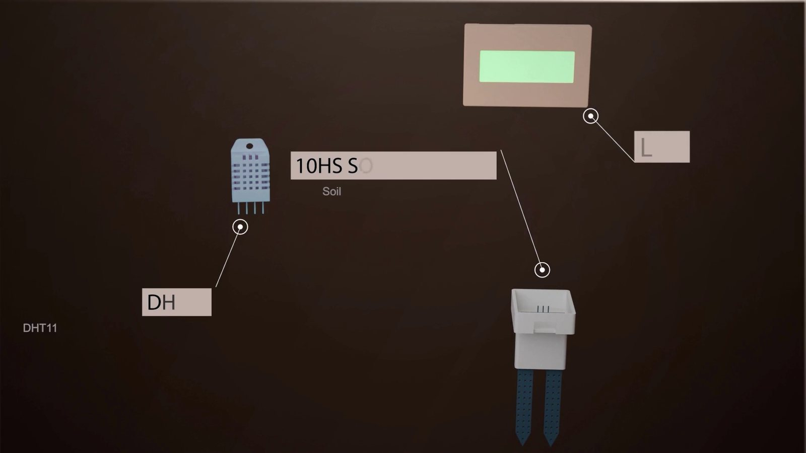
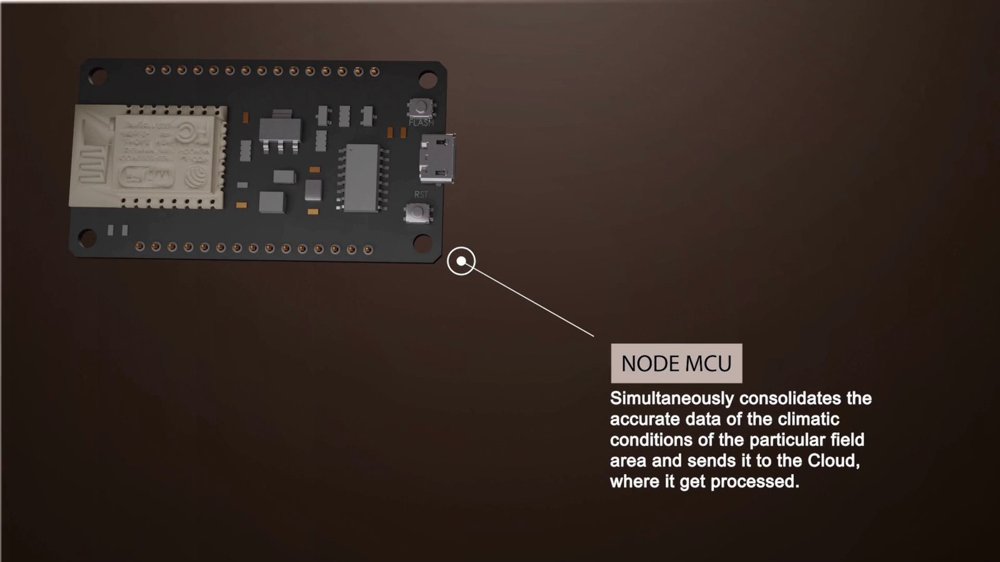
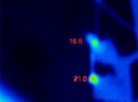
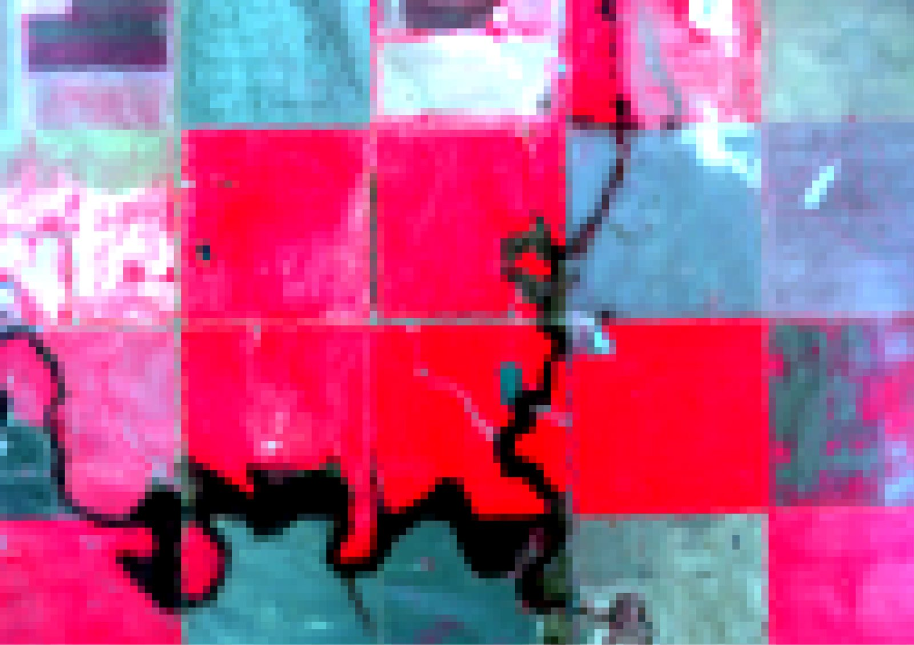
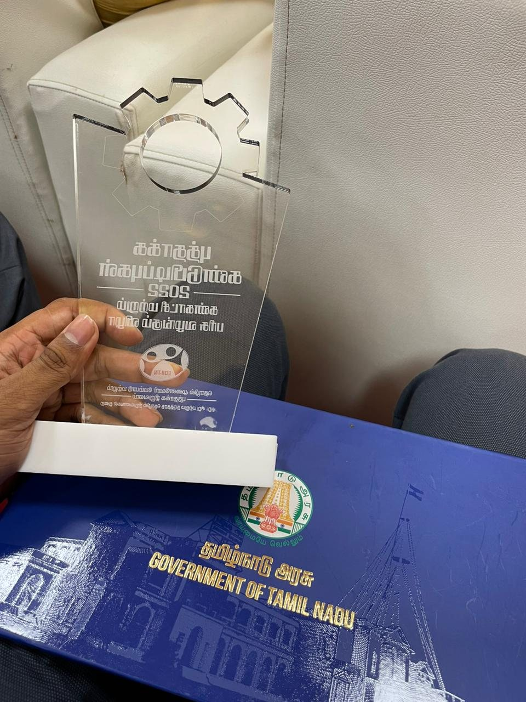

The idea
The team used a handheld thermal camera and field sensors and sent alerts by text. I joined the existing project and worked on improving the image classifier.
1Background
Crop disease can spread before symptoms are visible. The team investigated leaf temperature as an early signal and wanted to make monitoring affordable for small farms.
The team's aim was a tool that a small farmer could afford and use without a smartphone or formal schooling.
2What the team built
Thermal camera stick. A hand-held stick carries a thermal camera, a microcontroller and a GPS module. The farmer walks the field with it twice a day, 12 hours apart. The team's animation also shows the camera on a drone mount.
Field unit. A fixed unit built on a NodeMCU board reads soil moisture, temperature, humidity and rainfall, shows them on an LCD, and sends them to a Firebase database.
Backend. The backend uses the weather readings to subtract the ambient effect from the thermal image, which leaves what the team called the absolute leaf temperature. Its working principle was that a shift of about 0.6 to 1 °C in leaf temperature over 12 hours, after that correction, indicates a probable microbial attack. The GPS fix locates the patch.
Message. A GSM module sends the farmer an SMS with the location and advice, so the system works without a smartphone. Thermal images were processed in MATLAB, and the team also studied satellite thermal data in QGIS.
The team paired thermal images with local weather readings because a leaf can warm or cool as conditions change. Geotagging the images meant the alert could point the farmer to the patch to check.








3My part
I joined Team MOVIS in late 2021, after the project had started, and led its coding team. My work on the image classifier improved it by 35%.
4Recognition
Kishan Know reached the national top 14 of TCS Digital Impact Square's Innovate with DIS programme, run with Startup India, and the team attended its three-month bootcamp from January to March 2022. In December 2022 it received the Tamil Nadu Student Innovators Award and a grant of ₹1 lakh from EDII-TN.

